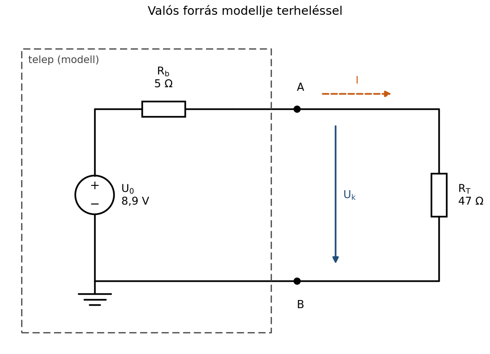
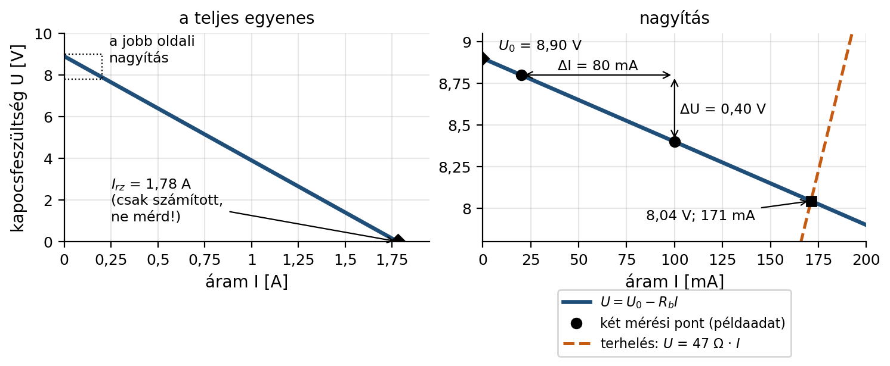
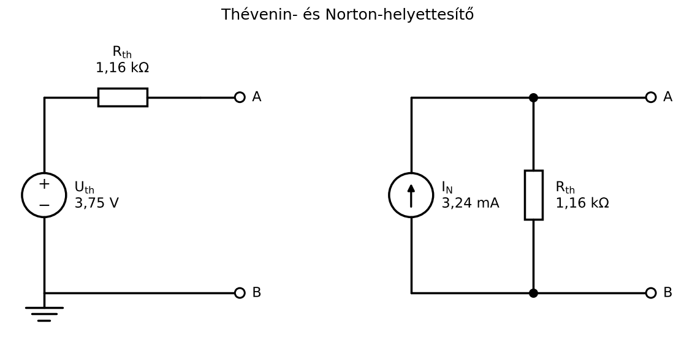
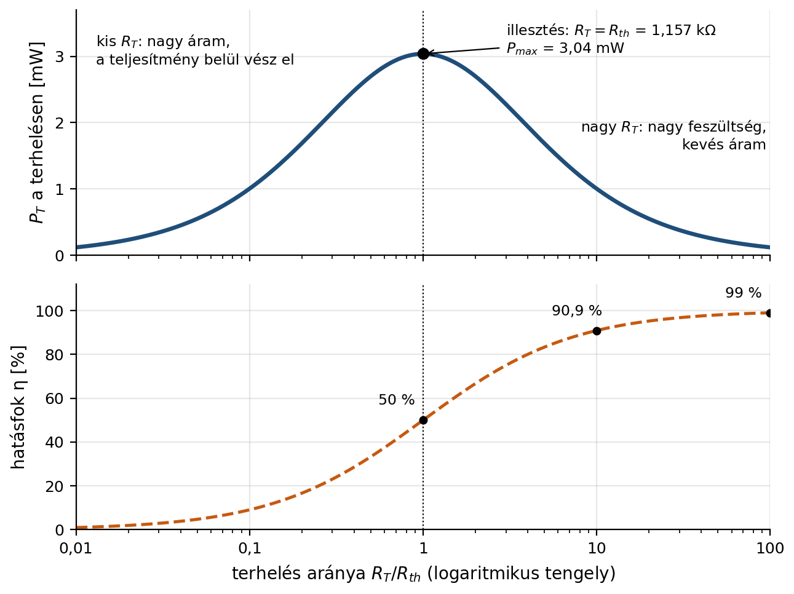
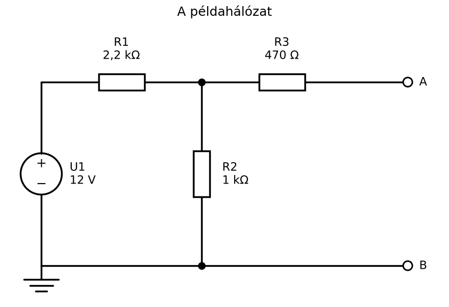
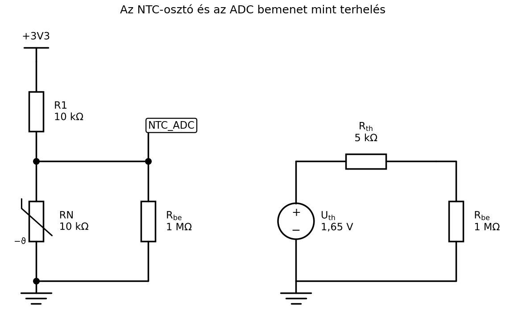

Ennek az alfejezetnek a végére tudsz majd egy telepet vagy tápegységet „ideális forrás + belső ellenállás” alakban modellezni, a belső ellenállást két mérési adatból meghatározni, egy tetszőleges ellenálláshálózatot a két kivezetése felől egyetlen forrással és egyetlen ellenállással helyettesíteni, és eldönteni, hogy egy feladatban a feszültséget vagy a teljesítményt kell-e „illeszteni”.
A szenzormodul hőmérsékletmérő ága egy 10 kΩ-os soros ellenállás és egy 10 kΩ-os NTC termisztor (hőmérsékletfüggő ellenállás, a neve a negatív hőfoktényezőre utal) a 3,3 V-os sínről. 25 °C-on a középpont feszültsége a Feszültségosztó, áramosztó és a terhelés hatása szerint 1,65 V. Ezt a pontot azonban nem a levegőbe kötjük: ráteszünk egy mikrovezérlő analóg bemenetet, hibakereséskor egy multimétert, esetleg egy oszcilloszkópot. Mindegyik áramot vesz fel, tehát mindegyik elmozdítja a feszültséget.
Minden új terhelésnél újraszámolhatnád az egész hálózatot, de van jobb út. Bármilyen bonyolult is az, ami a két kivezetés mögött van, ha lineáris, akkor a külvilág felől nézve két számmal leírható. Ugyanez a két szám mondja meg, miért esik egy 9 V-os telep feszültsége terhelés alatt, és mennyi teljesítményt lehet egy forrásból legfeljebb kivenni.
Vegyél a kezedbe egy telepet. Terhelés nélkül a kapcsain nagyjából a névleges feszültség mérhető. Ha ráteszel egy ellenállást, a feszültség kicsit leesik, és annál jobban, minél nagyobb áramot veszel ki. A telep tehát úgy viselkedik, mintha belül egy tökéletes feszültségforrás lenne, vele sorban pedig egy kis ellenállás, amelyen a kivett áram feszültséget ejt.

Az analógia a modellé: belül nincs külön forrás és külön ellenállás, amelyet kiszedhetnél. A belső ellenállás a kémiai folyamatok, az elektródák és a csatlakozások együttes hatását helyettesíti egy számmal, amely a telep töltöttségétől, hőmérsékletétől és korától is függ. Egy adott pillanatban, szűk áramtartományban mégis meglepően jól működik.
Definíció. Az ideális feszültségforrás a kapcsain mindig ugyanazt a feszültséget tartja, bármekkora áram folyik. Az ideális áramforrás mindig ugyanazt az áramot hajtja át, bármekkora feszültség alakul ki rajta.
Egyik sem létezik: egy ideális feszültségforrás rövidre zárva végtelen áramot, egy ideális áramforrás nyitott kapcsokkal végtelen feszültséget adna. A valóságot a valós forrás modellje közelíti, a ideális forrás és a vele sorba kötött belső ellenállás (internal resistance):
Szavakkal: a kapocsfeszültség () az üresjárási feszültségből (, ekkor ) a belső ellenálláson eső feszültséggel kisebb. A mértékegységek rendben vannak: . Ha a terhelés ellenállás, a kör egy soros kör, tehát
Ez a második alak pontosan a feszültségosztó képlete: a belső ellenállás és a terhelés osztót alkot. Érvényességi feltétel: az adott áramtartományban állandónak vehető.
Az -t nem lehet ohmmérővel megmérni: az ohmmérő saját mérőáramot küld a mért elemen át, és egy feszültségforrás ezt meghamisítja, sőt a műszert is károsíthatja. Ehelyett két különböző terhelésnél megmérjük a feszültséget és az áramot. A két pontra felírt egyenlet különbségéből
Szavakkal: a belső ellenállás a feszültség–áram egyenes meredekségének abszolút értéke. Tegyük fel (feltételezett példaadatok), hogy egy 9 V-os telepen mA mellett V, mA mellett V mérhető. Ekkor
és V. A modellből következő rövidzárási áram A volna, de ezt soha ne mérd meg: a rövidre zárt telep melegszik, szivároghat vagy meg is gyulladhat (lásd Energiatárolók veszélyei: akkumulátor, kondenzátor, induktivitás).
A két mérési pontot elég messze válaszd egymástól. Ha az áramok 20 mA és 25 mA, a feszültségkülönbség csak 25 mV, és egy 10 mV-os leolvasási hiba máris 40 %-os hibát visz az -be.

A jobb oldali grafikonon a terhelés egyenese () és a forrás egyenese ott metszi egymást, ahol mindkét összefüggés egyszerre teljesül: ez a munkapont (operating point), itt 8,04 V és 171 mA. Ezt a grafikus gondolatot a Nemlineáris elemek és a munkapont viszi tovább.
Definíció. Kétpólusnak nevezünk minden olyan áramkörrészt, amelyhez a külvilág pontosan két kivezetésen (kapocson) csatlakozik. Lineáris a kétpólus, ha csak ellenállásokból, állandó független forrásokból (és lineáris vezérelt forrásokból, lásd később) áll.
Thévenin tétele. Minden lineáris kétpólus a két kapcsa felől nézve helyettesíthető egy feszültségű ideális forrás és egy vele sorba kötött ellenállás soros kapcsolásával.
Miért igaz? Lineáris hálózatban minden feszültség és áram a források és a kapocsáram elsőfokú kifejezése (ezt a Szuperpozíció és forrásátalakítás mutatja meg részletesen). A kapocsfeszültség tehát alakú, vagyis egy egyenes. Egy egyenest két adat meghatároz, és a soros – pár éppen ilyen egyenest ad.
A két adat meghatározása:
A „forrás kikapcsolása” számítási művelet: a nullára állított ideális feszültségforrás 0 V-ot tart a kapcsain, ez maga a rövidzár; a nullára állított áramforrás 0 A-t enged át, ez a szakadás. Valódi tápegységet rövidre zárni nem szabad.
Ugyanaz az egyenes leírható egy áramforrás és vele párhuzamosan kötött ellenállás segítségével is. Ez a Norton-helyettesítő:
Az éppen a rövidzárási áram: a rövidzáron az egész forrásáram átfolyik, a párhuzamos ellenállásra nem jut. Nyitott kapcsokkal az egész az -n folyik, és .

A helyettesítés csak a kapcsok felől egyenértékű. Ami belül történik (az egyes ellenállások árama, a belül hővé váló teljesítmény), az a helyettesítőből nem olvasható ki. Nyitott kapcsokkal a Thévenin-alak semmit sem fogyaszt, a Norton-alak viszont folyamatosan hőt termel a saját ellenállásán, pedig kifelé mindkettő ugyanaz.
Definíció. Egy áramkör kimeneti ellenállása (output resistance) a kimeneti kapcsain látott Thévenin-ellenállás. A bemeneti ellenállása (input resistance) az az ellenállás, amelyet a bemenetére kötött forrás „lát”: (saját belső forrás nélküli, lineáris bemenetnél).
Egy fokozat kimenete a következő bemenetét hajtja: a meghajtó, a terhelés, és a kettő feszültségosztót alkot. A tényleges bemeneti feszültség és a relatív hiba:
Ha , a hiba közelítőleg . Ez a forrás- és terhelésimpedancia aránya dönt mintája: 10-szeres arány kb. 9 %, 100-szoros kb. 1 % hibát jelent. Ugyanez a két fogalom lesz a kulcs az Erősítő alapkapcsolások és a kisjelű modell, a Az ideális műveleti erősítő és a negatív visszacsatolás és a Logikai szintek, családok és kimenettípusok alfejezetekben.
Mekkora terhelés veszi ki a legtöbb teljesítményt egy , forrásból? A terhelés teljesítménye
Kis -nél alig van feszültség rajta, nagy -nél alig folyik áram, a maximum a kettő között van. Deriválás nélkül is megtalálható. Alakítsd át a nevezőt: , így
A nevezőben a második tag nem lehet negatív, és csak -nál nulla. Tehát
Ez a teljesítményillesztés (power matching). Ára van: a modell hatásfoka , illesztéskor csak 50 %, vagyis a belső ellenálláson ugyanannyi hő keletkezik, mint amennyi a hasznos teljesítmény.

Teljesítményillesztést akkor használunk, ha a jel gyenge, és minden pikowatt számít, vagy ha egy hosszú vezeték végén a visszaverődéseket kell elkerülni (antennák, rádiófrekvenciás fokozatok, Reflexió, lezárás és illesztés). Tápellátásnál és a legtöbb jelátvitelnél feszültségillesztést akarunk: , hogy a feszültség épen átjusson, és a teljesítmény ne a forrásban vesszen el. Egy Ω-os (példaadat) 12 V-os adapter „illesztett” terhelése 0,2 Ω volna: 30 A, 180 W a terhelésen és 180 W az adapter belsejében. Ez rövidzárhoz közeli üzem, nem cél.
Továbbvitt eredmény. A Thévenin-helyettesítés ( = üresjárási feszültség, = a kapcsok felől látott ellenállás kikapcsolt forrásokkal) és a kimeneti/bemeneti ellenállás fogalma lesz az eszközünk A multiméter, az Erősítő alapkapcsolások és a kisjelű modell, Az ideális műveleti erősítő és a negatív visszacsatolás, a Logikai szintek, családok és kimenettípusok, az Érzékelők illesztése és a jelút hibaköltségvetése és a Zajszűrés: RC, LC, ferrit, közös módusú fojtó, árnyékolás alfejezetben. A valós forrás belső ellenállását az Energiatárolók veszélyei: akkumulátor, kondenzátor, induktivitás és a Teljesítménymérleg, lineáris szabályzó és LDO használja, a feszültség- és teljesítményillesztés különbségét a Reflexió, lezárás és illesztés.
1. rész. Egy 12 V-os forrás, kΩ, a középpontból a földre kΩ, onnan Ω visz az A kapocshoz; a B kapocs a föld (mind E12-es érték).

Üresjárás: nyitott A kapocsnál az -on nem folyik áram, tehát nem esik rajta feszültség, és az – osztó kimenete:
Kikapcsolt forrás: a 12 V-os forrás helyére rövidzár kerül. Az A felől nézve sorban van az párossal:
Norton: mA.
Terheléssel ( kΩ): V, mA.
Józanész-ellenőrzés: az eredeti hálózatban Ω párhuzamos -vel, ez 663 Ω; a középpont V, ebből a terhelésre V jut. Egyezik.
2. rész: az NTC-csomópont. A +3V3 sínre kötött 10 kΩ + NTC (25 °C-on 10 kΩ) osztó helyettesítője:

Tegyük fel, hogy a mérőbemenet egyenáramú modellje MΩ (feltételezett érték; a valódi AD-átalakító bemenete bonyolultabb, lásd Mintavétel, kvantálás és ADC). Ekkor
A hiba 8,2 mV. Egy 12 bites átalakító egy lépése mV, tehát ez kb. 10 lépés: nem elhanyagolható. Egy 10 MΩ bemeneti ellenállású multiméter (tipikus adatlapérték) ezzel szemben csak 0,05 %-ot, vagyis kb. 0,8 mV-ot hibázna.
Először a telep két pontjából számolunk, majd az
elkit.dc.thevenin függvénnyel ellenőrizzük a kézi
eredményt. A függvény az üresjárási feszültséget számolja ki, majd 1
A-es próbaáramot vezet a kapocsba, és a feszültségváltozásból adja
-t.
from elkit import units
from elkit.dc import Circuit, thevenin
U1, I1, U2, I2 = 8.80, 0.020, 8.40, 0.100 # feltételezett példaadatok
R_b = (U1 - U2) / (I2 - I1)
U_0 = U1 + R_b * I1
print("R_b =", units.fmt(R_b, "Ω"), " U_0 =", units.fmt(U_0, "V"),
" I_rz (számított) =", units.fmt(U_0 / R_b, "A"))
def halozat():
c = Circuit().add_vsource("U1", "in", "0", 12.0)
c.add_resistor("R1", "in", "a", units.parse("2k2"))
c.add_resistor("R2", "a", "0", units.parse("1k"))
return c.add_resistor("R3", "a", "ki", units.parse("470R"))
u_th, r_th = thevenin(halozat(), "ki")
print("U_th =", units.fmt(u_th, "V"), " R_th =", units.fmt(r_th, "Ω", digits=5),
" I_N =", units.fmt(u_th / r_th, "A"))
rz = halozat().add_vsource("A_rz", "ki", "0", 0.0).solve() # 0 V-os forrás: árammérő
print("rövidzárási áram:", units.fmt(-rz.i("A_rz"), "A"))
for r_t in (470.0, 1500.0, 4700.0):
teljes = halozat().add_resistor("RT", "ki", "0", r_t).solve().v("ki")
helyett = u_th * r_t / (r_th + r_t)
print(f"R_T = {units.fmt(r_t, 'Ω'):>7}: hálózat {teljes:.4f} V, Thévenin {helyett:.4f} V")R_b = 5 Ω U_0 = 8.9 V I_rz (számított) = 1.78 A
U_th = 3.75 V R_th = 1.1575 kΩ I_N = 3.24 mA
rövidzárási áram: 3.24 mA
R_T = 470 Ω: hálózat 1.0829 V, Thévenin 1.0829 V
R_T = 1.5 kΩ: hálózat 2.1167 V, Thévenin 2.1167 V
R_T = 4.7 kΩ: hálózat 3.0090 V, Thévenin 3.0090 VMásodszor az NTC-csomópont terhelési hibáját számoljuk, végül végigsöprünk néhány szabványos terhelést a teljesítményillesztéshez.
from elkit import szenzormodul as sm
from elkit.dc import divider
u0 = divider(sm.U_3V3, sm.R_NTC_SOROS, sm.NTC_R25)
r_th_ntc = units.parallel(sm.R_NTC_SOROS, sm.NTC_R25)
lsb = sm.ADC_U_REF / 2 ** sm.ADC_BITS
for r_be in (1e6, 10e6):
u = u0 * r_be / (r_th_ntc + r_be)
print(f"R_be = {units.fmt(r_be, 'Ω'):>6}: U = {u:.5f} V, hiba {(u - u0) / lsb:6.2f} LSB")
p_max = u_th ** 2 / (4 * r_th)
print("P_max =", units.fmt(p_max, "W"))
for r_t in (100.0, 470.0, 1200.0, 4700.0, 47000.0):
p = u_th ** 2 * r_t / (r_th + r_t) ** 2
eta = r_t / (r_th + r_t)
print(f"R_T = {units.fmt(r_t, 'Ω'):>7}: P = {units.fmt(p, 'W'):>8}, "
f"P/P_max = {p / p_max:.2f}, η = {eta:.1%}")R_be = 1 MΩ: U = 1.64179 V, hiba -10.19 LSB
R_be = 10 MΩ: U = 1.64918 V, hiba -1.02 LSB
P_max = 3.04 mW
R_T = 100 Ω: P = 889 µW, P/P_max = 0.29, η = 8.0%
R_T = 470 Ω: P = 2.5 mW, P/P_max = 0.82, η = 28.9%
R_T = 1.2 kΩ: P = 3.04 mW, P/P_max = 1.00, η = 50.9%
R_T = 4.7 kΩ: P = 1.93 mW, P/P_max = 0.63, η = 80.2%
R_T = 47 kΩ: P = 285 µW, P/P_max = 0.09, η = 97.6%Circuit kapocspárjának Thévenin-adatait két
próbaterhelésből határozza meg, és vesd össze az
elkit.dc.thevenin eredményével a példahálózaton. Mi
történik, ha a két próbaellenállás nagyon közel van egymáshoz, és a
feszültségeket 1 mV-ra kerekíted?Az ideális feszültségforrás feszültsége, az ideális áramforrás árama független a terheléstől. A valós forrás modellje ; két terhelési pontból: abszolút értéke. Thévenin szerint minden lineáris kétpólus a kapcsai felől egy forrás és soros ellenállás; az üresjárási feszültség, a kikapcsolt források (feszültségforrás: rövidzár, áramforrás: szakadás) melletti eredő, vagy . Norton: párhuzamosan -val. Az egyenértékűség csak kifelé igaz. Feszültségillesztés: , hiba . Teljesítményillesztés: , , 50 % hatásfok; tápellátásnál nem cél.
1. A; V; W; belül W.
2. V; kΩ; mA. Azért kerek, mert rövidzárnál -n nem folyik áram: A.
3. Ω; 2 A-nél V. A modell A rövidzárási áramot jósol, de egy szabályzott adapter ennél jóval kisebb áramnál korlátoz vagy lekapcsol: a lineáris modell csak a mért tartományban érvényes.
4. −20 °C: kΩ; 85 °C: kΩ. A legrosszabb a nagy , vagyis a hideg. A feltétel , azaz kΩ MΩ. Ekkora bemeneti ellenállást nem mindig lehet garantálni; ilyenkor pufferoló erősítő kell (lásd Alapkapcsolások: invertáló, neminvertáló, összegző, különbség- és műszererősítő).
5. V, V, így V. A forrás kikapcsolásával a sín a földre kerül, és az A–B kapcsok között kΩ látszik. Terheléssel V; a negatív előjel azt jelenti, hogy B van magasabb potenciálon.
6. jelöléssel . A egyenlet , azaz , gyökei és . A hatásfok : 75 % és 25 %. Ugyanakkora hasznos teljesítmény mellett a nagyobb terhelés háromszor jobb hatásfokot ad.
7. Egy megoldás:
def thevenin_ket_pontbol(r_a, r_b, felbontas=None):
pontok = []
for r in (r_a, r_b):
u = halozat().add_resistor("RT", "ki", "0", r).solve().v("ki")
if felbontas:
u = round(u / felbontas) * felbontas # a „műszer” kerekítése
pontok.append((u, u / r))
(u1, i1), (u2, i2) = pontok
r = (u1 - u2) / (i2 - i1)
return u1 + r * i1, r
for r_a, r_b in ((470.0, 4700.0), (1500.0, 1510.0)):
for felbontas in (None, 1e-3):
u, r = thevenin_ket_pontbol(r_a, r_b, felbontas)
print(f"{r_a:6.0f} Ω és {r_b:6.0f} Ω, felbontás {felbontas}: "
f"U_th = {u:.4f} V, R_th = {r:7.1f} Ω") 470 Ω és 4700 Ω, felbontás None: U_th = 3.7500 V, R_th = 1157.5 Ω
470 Ω és 4700 Ω, felbontás 0.001: U_th = 3.7500 V, R_th = 1157.4 Ω
1500 Ω és 1510 Ω, felbontás None: U_th = 3.7500 V, R_th = 1157.5 Ω
1500 Ω és 1510 Ω, felbontás 0.001: U_th = 3.6930 V, R_th = 1116.7 ΩPontos számokkal bármely két terhelés jó; kerekített adatokkal a közeli pontok kis különbsége felnagyítja a hibát. Még közelebbi pontoknál, nagyobb kerekítésnél az eredmény teljesen használhatatlan lehet, ezért válassz egymástól jól elkülönülő terheléseket.